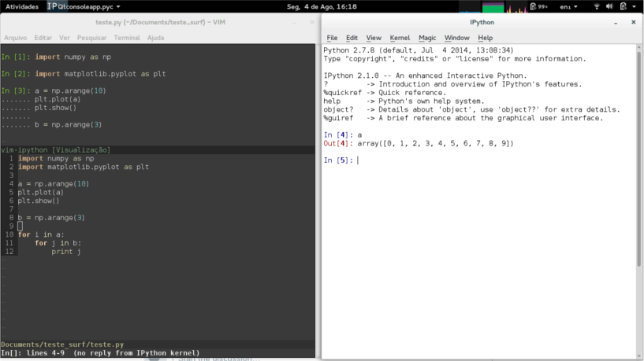

04 08 2014
Você que quer aumentar a sua proditividade com o Python, e gosta de utilizar o
vim, o desenvolvedor ivanov criou uma aplicação capaz de conectar o kernel de
uma sessão IPython com o vim.
Para isso, basta adicionar o plugin em seu diretório ~/.vim/ftplugin/python ou no seu diretório bundle, caso você use o infect para carregar todos os seus plugins de forma mais fácil.
O vim-ipython está disponível em: http://github.com/ivanov/vim-ipython. Onde existe um passo a passo para
instalação e utilização.
Se você tem seu vim compilado com a versão atual de utilização do Python, basta abrir em uma janela do seu terminal, um ipython console; ou ipython qtconsole; e em outra janela rodar o seu vim.
Com o vim aberto,
:IPython
e isso conectará o seu vim à sessão atual de IPython.
para rodar todo o seu código você pode utilizar o famoso F5 ou
Caso você não tenha seu vim compilado corretamente, você pode seguir o tutorial do Martin Brocher, em sua apresentação à PyCon 2012.
Depois de muito quebrar a cabeça, consegui fazer meu IPython ficar mais produtivo. E abandonar por um tempo o meu antigo amigo mágico %paste.

blog comments powered by Disqus